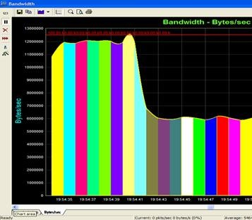
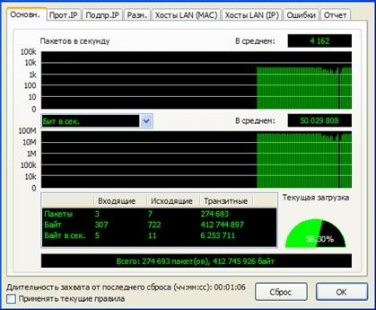
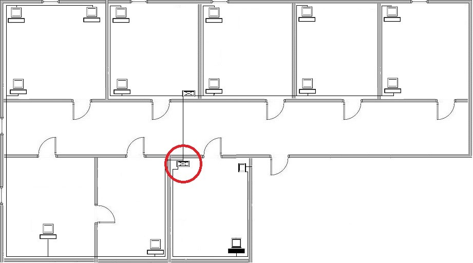
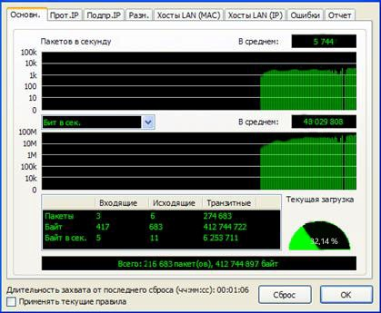

Тест и решение
Тестирование
В ходе осмотра ЛВС предприятия, было решено произвести тестирование сети на стрессоустойчивость, так как видимых проблем в сети не наблюдается.
Цель стрессового тестирования сети состоит, во-первых, в выявлении дефектов оборудования и архитектуры сети и, во-вторых, в определении границ применимости существующей архитектуры сети.
Основными инструментами для стрессового тестирования сети являются генераторы трафика, анализаторы сетевых протоколов. Так же будет использована команда стандартной утилиты TCP/IP – ping.
Для стрессового тестирования сети воспользуемся программным продуктом CommView, Iris. CommView способна генерировать трафик нужного вам размера, вами выбранного протокола, с определенным размером пакета. Так же программа способна перехватывать и декодировать передаваемые в сети пакеты. Показывать загруженность сети, хосты, генерировать отчеты о работе сети в HTML файл. C помощью Iris можно вести мониторинг, а также декодировать перехватываемые пакеты.
При проведении теста на стрессовую нагрузку, с трех рабочих станций будут генерироваться пакеты максимального размера 1500 байт. Широковещательная рассылка будет вестись непрерывно по 5000 пакетов в секунду. Один из, генерирующих трафик компьютеров располагается в наборном участке, и подключен ко второму сегменту сети в 8 портовый коммутатор, два других находятся в бухгалтерии, подключенные к основному 8 портовому коммутатору.
При запуске генератора пакетов CommView, активируем сетевой монитор Iris. Данный монитор покажет загрузку основного коммутационного оборудования.
На изображении видно, что скорость превышает 100 Мбит, но это не ошибка так как два коммутатора соединяются по специальному высокоскоростному каналу. По графику так же можно сказать, что пропускная способность оборудования на грани, а временами даже превышает ее. Отсюда можно делать выводы что не все посланные пакеты дойдут, а если и дойдут, то со значительной задержкой по времени.
Воспользуемся командой Ping и пошлем пакеты на компьютеры, генерирующие трафик, а также просто работающие в сети. На рисунке 9 представлены результаты.
На отчете видно, что не все пакеты доходят до узла, а если и доходят, то с задержкой. Для точности, на сетевом мониторе, просмотрим степень загруженности узла.
На мониторе видно, что канал загружен в среднем на 60%. Эти данные говорят о том, что происходит потеря пакетов на данном узле.
Проведя дополнительные опросы станций с помощью команды Ping, выявились определенные закономерности. А именно, выяснилось, что потеря пакетов происходит, только при передаче между станциями подключенные, к разным коммутаторам. Получается, потери происходят при передаче сообщения между коммутаторами, это является «узким» местом.
Решение проблемы
Как было выяснено из предыдущего тестирования, в ЛВС предприятия имеется «узкое» место из-за которого во время пиковой нагрузки происходит потеря пакетов. Это происходит по причине не справляющегося с нагрузкой основного коммутатора. Коммутатор представлен моделью D-Link DES-1008D.
Для решения проблемы потери кадров при высокой загруженности необходимо заменить существующий коммутатор на более подходящий для данной сети.
Коммутатор можно заменить на Cisco Catalyst WS-C2960-8TC-L, так как данный коммутатор более современен и имеет возможность управления, в отличии от установленного в данной ЛВС.
После установки нового коммутатора в сеть были проведены те же этапы тестирования. Результаты повторного тестирования приведены ниже.При отправлении запросов командой Ping не было выявлено потери пакетов.
Так же с помощью сетевого монитора была просмотрена нагрузка на новый коммутатор. По монитроингу видно, что нагрузка на коммутатор понизилась в половину.
